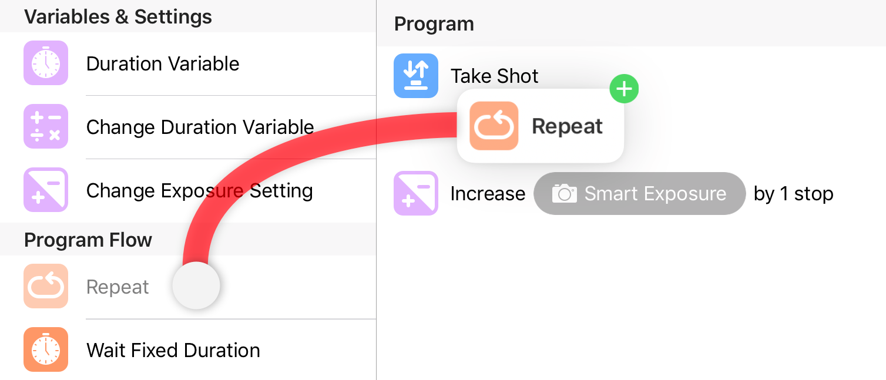
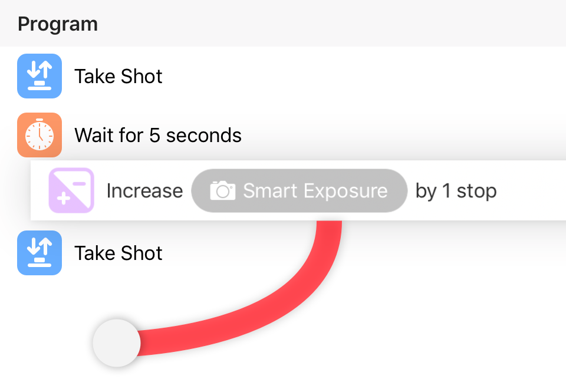
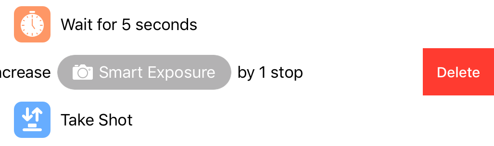
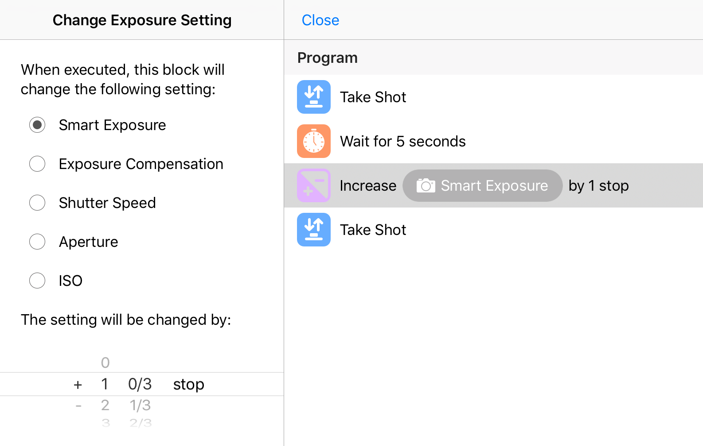
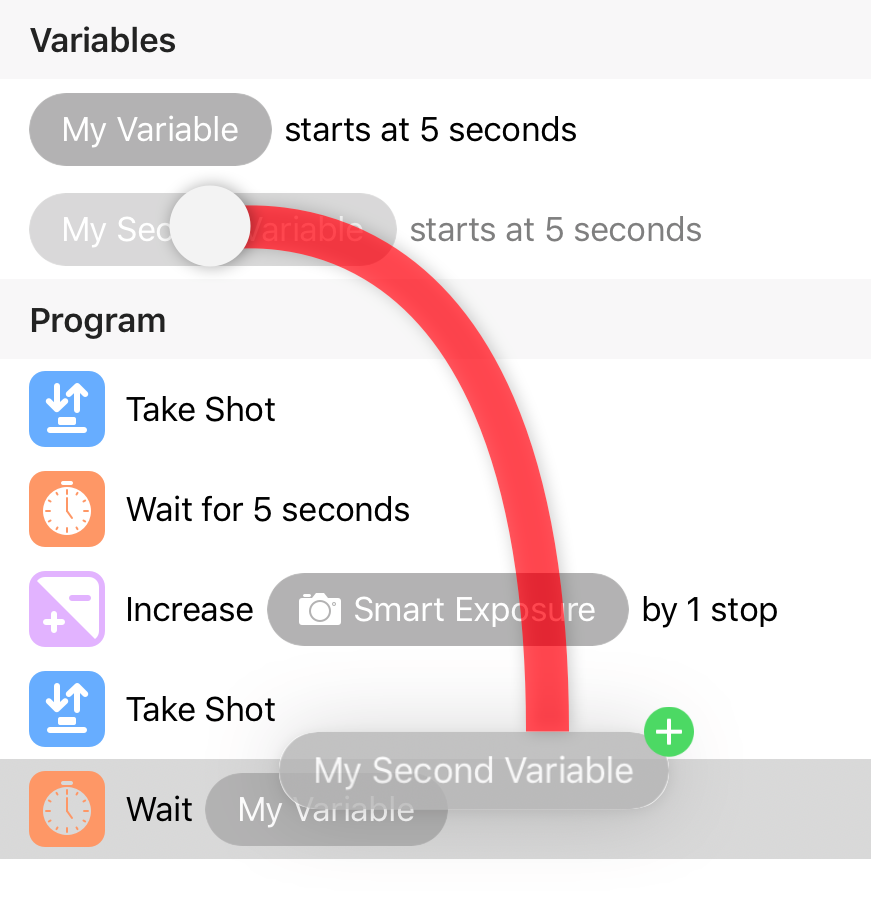
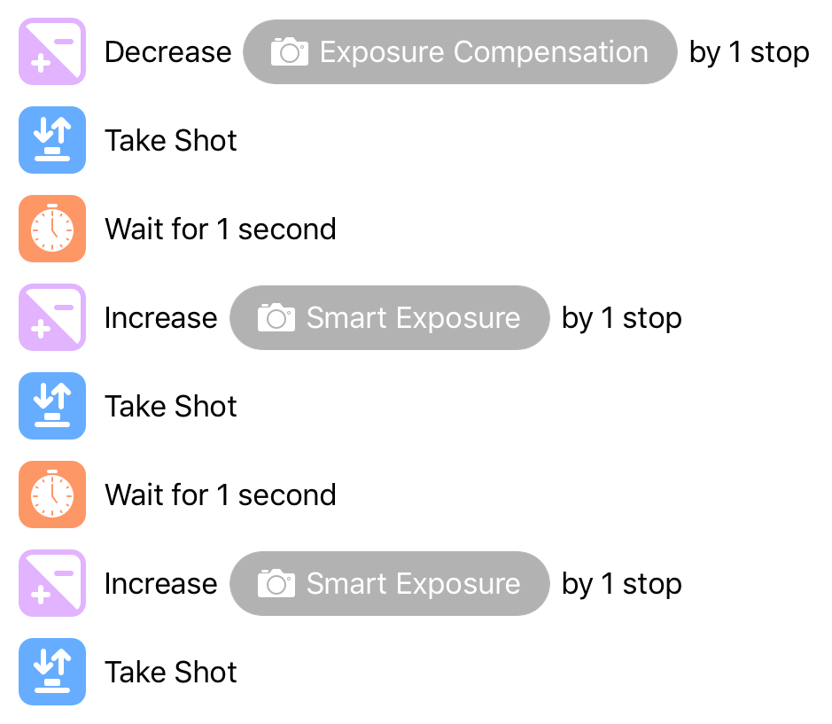
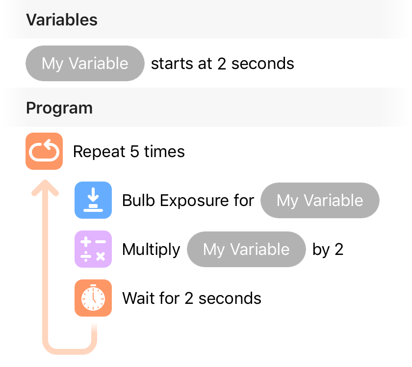
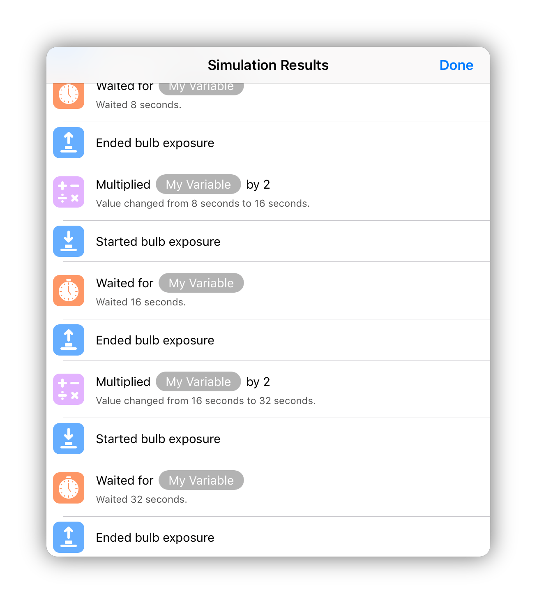
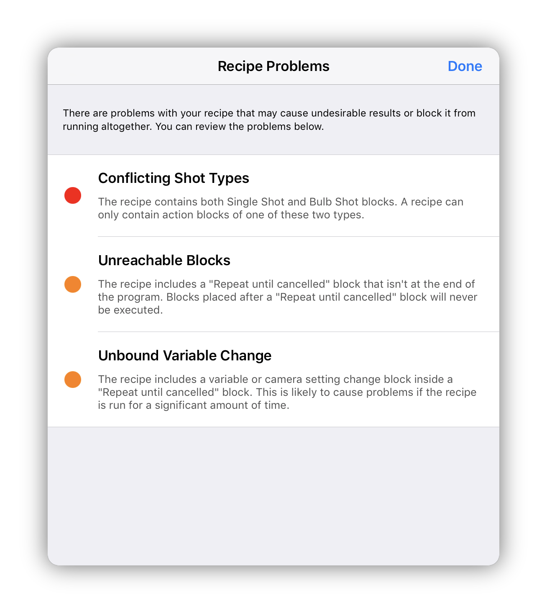
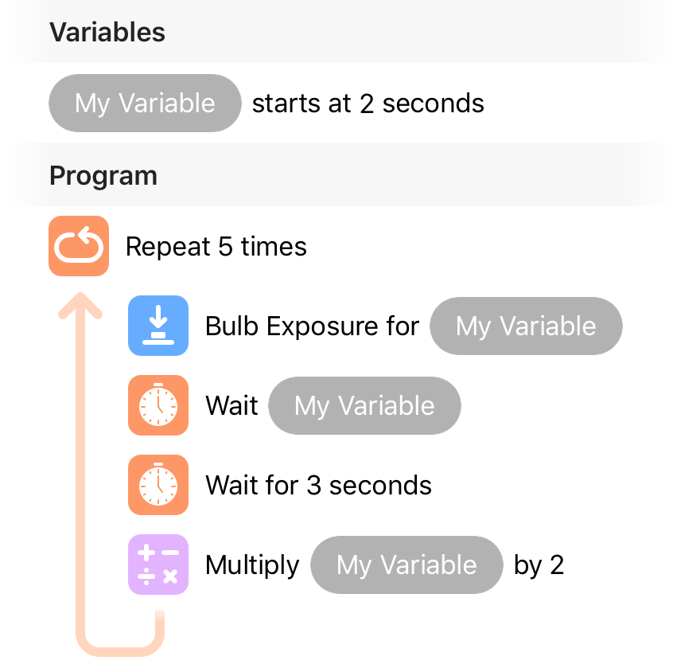

Recipes are an extension to our Shutter Robot feature that allow you to automate your camera in exactly the way you want. Using the Recipes Editor, you assemble a series of camera setting adjustments and shutter triggers together in whichever way you’d like. Once you’ve constructed the perfect recipe, Cascable’s Shutter Robot can run it against any camera that supports the features the recipe uses.
To get started, navigate to the Recipes Editor section of the Cascable app, then tap Create & Edit Recipes and either choose an existing recipe to edit, or tap Create Document to create a new, empty recipe.
Important: Recipes requires iOS 11 or higher.
You use blocks to build your recipes. Each block represents an individual action, and by chaining blocks together you can build complex and powerful programs to automate your photography.
With the exception of the Repeat block, blocks are always executed one after another, from top to bottom. When a Repeat block is executed, it will execute its child blocks in order from top to bottom, then execute them again until all child blocks have been executed the number of times the Repeat block has been set to repeat.
To add a block to your recipe on iPad, tap and hold the desired block in the panel on the left, then drag it to your program on the right and drop it in the desired place.

On iPhone, tap the + icon at the top of your recipe, then tap the desired block to add it to the end of your recipe. Alternatively, tap and hold the desired block then drag it to your program and drop it in the desired place.
If you add a block that requires a variable to operate, a new variable will be created for you if one isn’t already present. Otherwise, an existing variable will automatically assigned to the new block. See Variables for more information on variables.
You can easily re-order blocks (or add/remove blocks from a Repeat block) by tapping and holding on the block, then dragging it to the new place.

To remove a block, swipe left on it to reveal the Delete button, then tap Delete.

To change how a block behaves, tap it once. On iPad, the block’s configuration controls will appear in the panel on the left. On iPhone, it will appear over your recipe. Any changes you make will be saved automatically. On iPhone, tap Done to return to your recipe.

To assign a new variable to a block that requires a variable to operate, tap and hold the variable at the top of your recipe, then drag and drop it onto the desired block.

To run a recipe against your camera, navigate to the Remote Control section of the Cascable app, tap the Shutter Robot icon and choose the Recipes module. Then, tap the Recipe section to choose the recipe to run.
Once this is done, tap Engage to engage the Shutter Robot and start it as normal.
Like the rest of Shutter Robot’s modules, Recipes is designed to take your camera’s setup when a recipe is started and work from there. Therefore, when building recipes you will mostly be changing settings by a certain number of stops rather than explicitly setting values.
For example, let’s say we’re building a small HDR bracketing recipe. Rather than explicitly setting the camera’s exposure compensation to -1 EV, 0 EV, then +1 EV, you instead might Reduce EV by one stop, Increase EV by one stop, then Increase EV by one stop once more.

While this may seem more complex at first, it gives a great amount of flexibility. If the camera is set to 0 EV when you run this recipe, it will set the camera to -1 EV, 0 EV, then +1 EV just like the first example. However, if your camera is set to +1 EV when you run the recipe, it will set the camera to 0 EV, +1 EV, then +2 EV.
When a recipe stops running, either by reaching the end of its blocks or by being cancelled, Shutter Robot will reset your camera's settings back to what they were before the recipe started.
Variables are an advanced feature that you can use to build really advanced recipes.
Think of a variable as a small sticky note with a number written on it. When you change a variable, a new number is written onto the note. When you use a variable in a Wait or Bulb Exposure block, the number is read from the note and used.
Each variable has a name to make it easy to see what’s going on when you have more than one. You can name variables anything you wish — even with Emoji, if that takes your fancy.
With variables you can change duration values on-the-fly, and when combined with Repeat blocks, you can automate complex shoots with a surprisingly small program. For example, let’s consider the following program:

This program defines one variable, named My Variable, with a starting value of 2 seconds. Once the program starts running, the Repeat block will repeat the enclosed blocks 5 times. Here’s what will happen:
The Bulb Exposure block runs for the first time, taking a bulb exposure of the current value of My Variable (2 seconds).
The Change Duration Variable block runs for the first time, multiplying the current value of My Variable from 2 seconds to 4 seconds.
The Bulb Exposure block runs for the second time, taking a bulb exposure of the current value of My Variable (4 seconds).
The Change Duration Variable block runs for the second time, multiplying the current value of My Variable from 4 seconds to 8 seconds.
The Bulb Exposure block runs for the third time, taking a bulb exposure of the current value of My Variable (8 seconds).
…and so on. When the recipe has finished, it will have taken five bulb exposures of 2, 4, 8, 16, and 32 seconds. With four blocks, we’ve built a decent bulb bracketing recipe!
If you want to verify that your recipe behaves as you expect, Recipes allows you to run your recipes against a simulated camera. The simulator works mostly like a real camera, with the following caveats:
Wait and Bulb Exposure blocks are shortened to take no time, meaning simuation runs will only ever take a few seconds, even for recipes that would normally take hours.
No photos are taken.
To run your recipe in the simulator, tap Simulate at the top of your recipe, set up the simulated camera, then tap Run Simulation. After a moment, you will be presented with a log of everything that the recipe did.

This is a great way to verify that your variables and settings changes are working as you’d expect.
When building recipes, it’s possible to end up with a recipe that is technically impossible to run, or will run but might act in an unexpected way.
If you see a icon at the top of your recipe, a problem has been found that may impact your recipe. To view these warnings, tap the icon.

Warnings with a red dot are severe enough that your recipe cannot be run until the problem has been rectified. Warnings with an orange dot will still allow your recipe to run, but you may encounter unexpected behaviour.
Each warning will explain the problem to you and give you the information needed to rectify it.
You may have noticed that in all of our examples, we include a Wait block after each Take Shot or Bulb Exposure block.
After a camera takes a photo, there is an amount of cycle time before the camera is ready to take the next shot. Since this cycle time can vary wildly depending on your exact camera model and its settings, Recipes leaves it up to you to compensate for cycle time by adding Wait blocks where appropriate.
If you have a fast SD card and are taking JPEG images, cycle time is usually less than a second. In extreme cases, however, this can be much longer. For example, if you’re taking bulb exposures with your camera’s Long Exposure Noise Reduction setting switched on, your camera will take a second exposure equal in duration to the first, then need a few extra seconds to process and write the exposure. If you’re using Long Exposure Noise Reduction, you could compensate for it in your recipe like this:

You can find some tips and tricks for increasing camera responsiveness (including reducing cycle time) in our blog post: Making the Most of Cascable: Success with Shutter Robot.